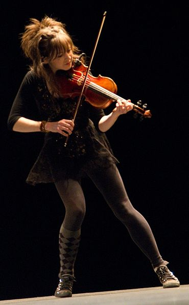

Биография
|
Жизнь и карьера
Линдси родилась в округе Ориндж, Калифорния.В возрасте 5 лет, впечатленная записями классической музыки, она попросилась учиться игре на скрипке. Несмотря на неуверенное материальное положение семьи на то время, Линдси начала занятия в 6 лет. Стирлинг обучалась через частные и оркестровые уроки в течение 12 лет. Когда ей было 16 лет, она создала рок-группу с четырьмя друзьями. Как часть её опыта с группой, Стирлинг написала сольную рок-композицию для скрипки, которая помогла ей выиграть звание Младшей Мисс Аризоны 2005 и соревнование талантов National Jr. Miss Pageant. Линдси — преданный член Церкви Иисуса Христа Святых последних дней, она говорит, что распространяет слово Господа с помощью её песен, музыки, движений. С 2010 по настоящее время После успешного выхода в четвертьфинал America’s Got Talent осенью 2010 Линдси начала карьеру сольного артиста. Она выпустила миниальбом в 2010, а в 2011 начала публиковать свои музыкальные видео на YouTube, набирая миллионы просмотров. В настоящее время обучается в Университете имени Бригама Янга Через свой уникальный стиль Линдси хочет показать положительный пример проблемным девочкам-подросткам. «Я хочу доказать, что вам не надо подстраиваться, чтобы быть принятыми. Самая большая Ценность в том, чтобы любить себя такими, какие вы есть.» (orig: «I want to prove that you don’t have to conform to be accepted. The greatest Value comes from loving yourself for who you are.») В данный момент сотрудничает со многими молодыми талантливыми музыкантами из Европы, такими как Ultra Wave (Arthur Tiguan), Omnia, Daminika, Rave CHannel. Готовятся к выходу совместные работы в стилистике progressive trance, ambient & chillout. |
 |